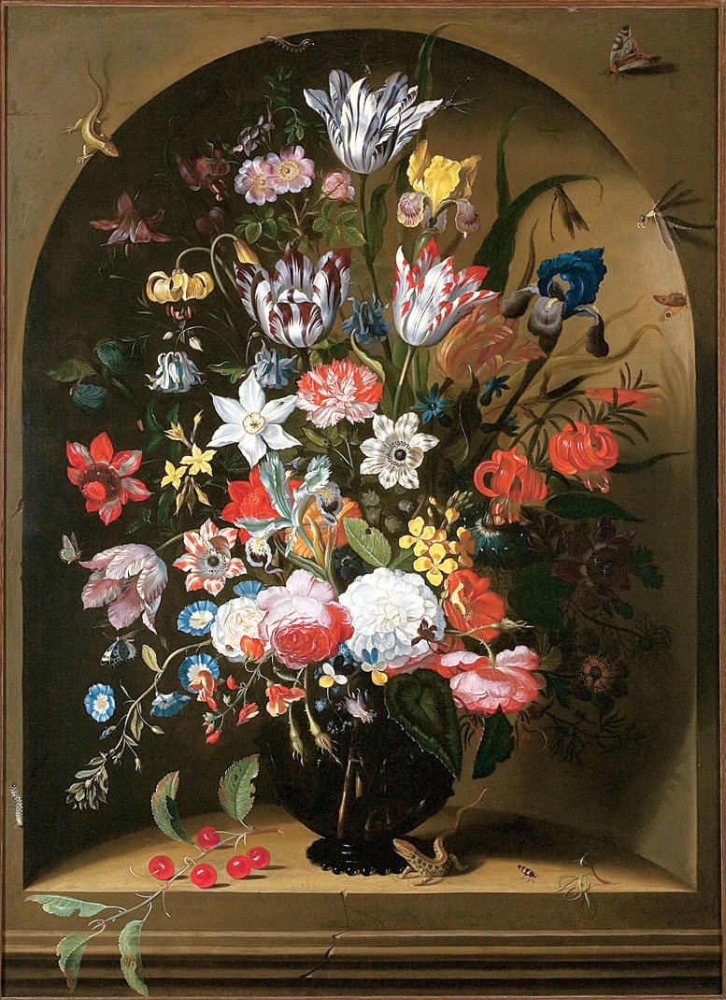
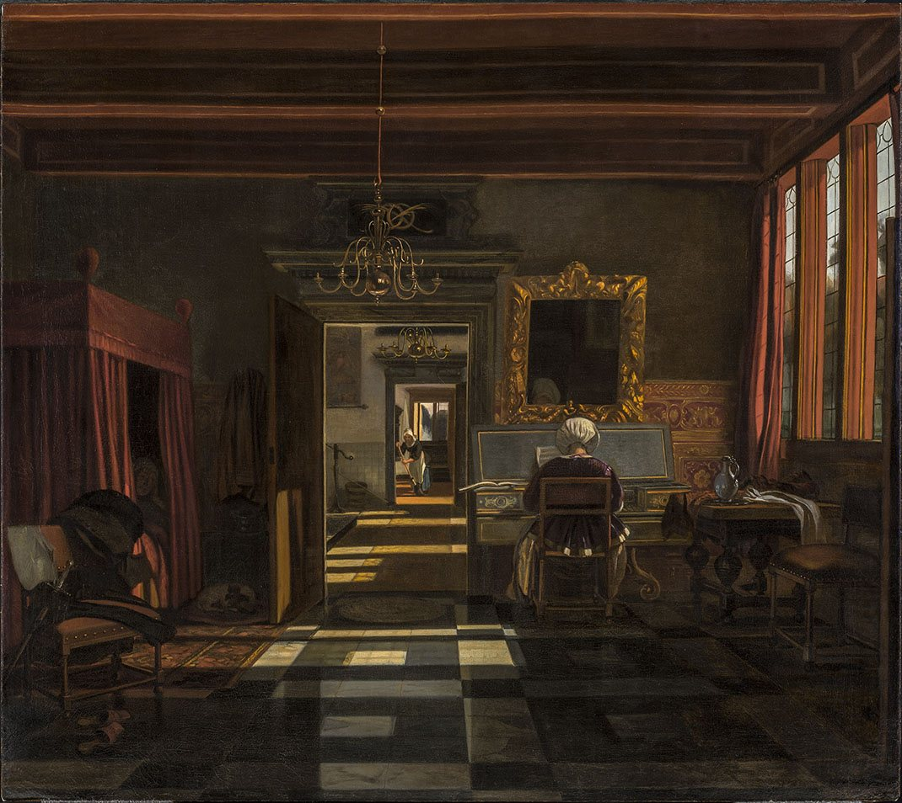
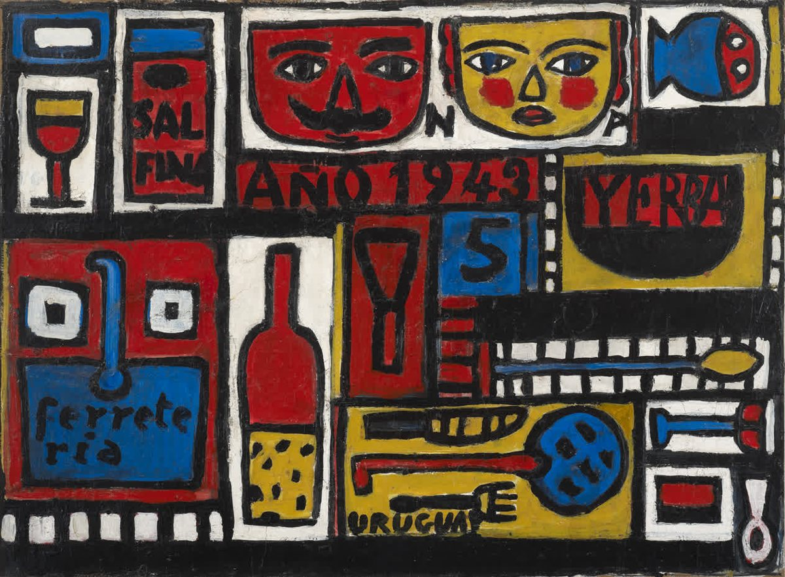
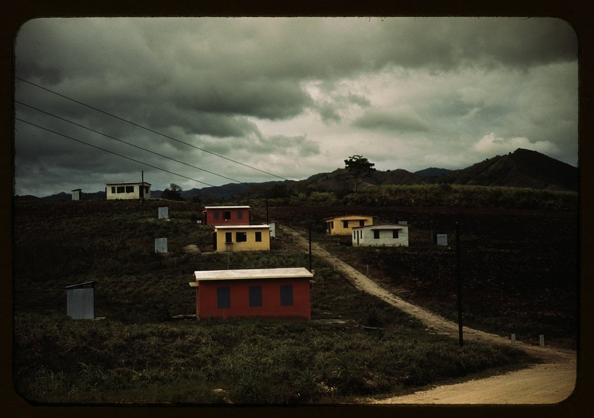
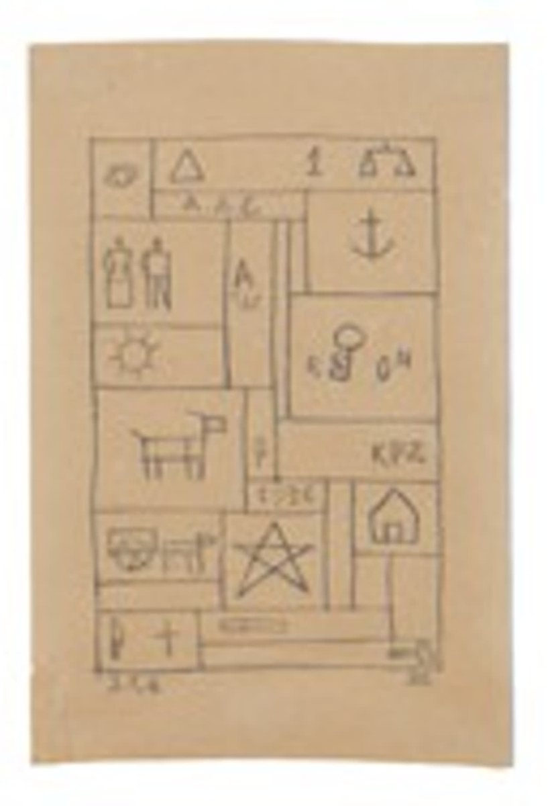

Flowers in a Glass Vase, with Insects, Cherries and Lizards
Jacob Marrel · 1650
Original museum collection record ↗These are artworks actually listed in the permanent collections of the Montréal Museum of Fine Arts and Pérez Art Museum Miami. Show this gallery on a laptop or tablet and scan the images with TRACE on your phone. Five images are hosted with this prototype so scanning works reliably. The Fortin image is linked from its external source pending reproduction clearance. The museums have not endorsed this prototype. Artwork display in museum galleries is not confirmed.

Jacob Marrel · 1650
Original museum collection record ↗
Emanuel de Witte · c. 1660–1667
Original museum collection record ↗


Jack Delano · 1942 / print 1986
Original museum collection record ↗
Unendorsed educational proof of concept. Rights remain with the respective artwork and photography rights holders. Obtain permissions before commercial circulation. Online collection listings do not guarantee a work is presently on view.